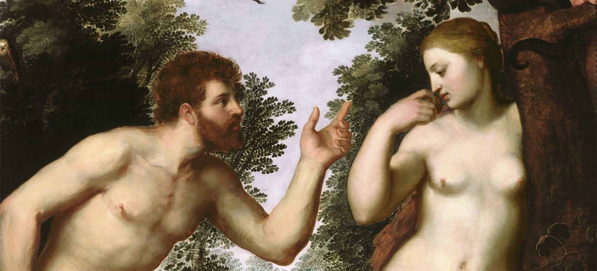
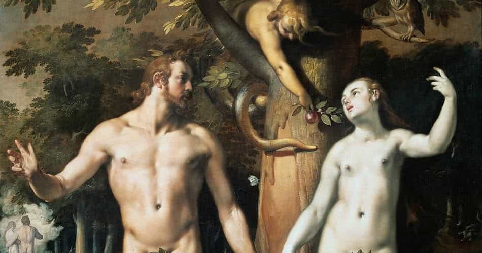
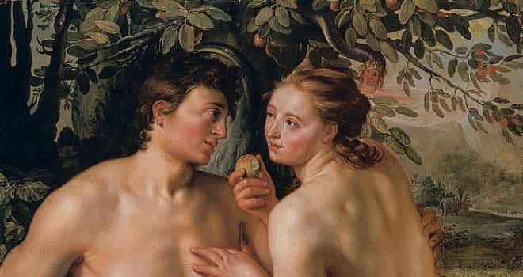
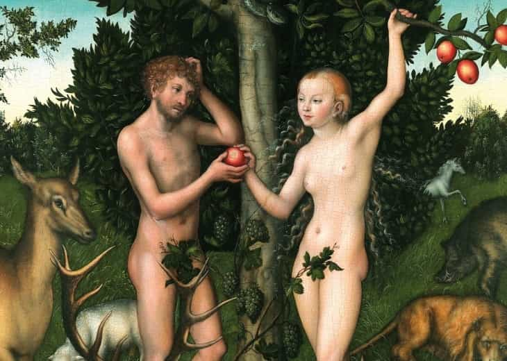

I'm Ted, I read old books, and my interest in Stanley Kubrick has nothing, absolutely nothing, to do with my interest in conspiracy theories, not at all, no way. And I like my privacy.


Adam, the first man, was also the first blue pilled man to have been red pilled. To examine this hypothesis, lets re-read the very short story of Adam and Eve, analyzing it line by line using the classic NIV translation—and along the way, each sentence of this brief, ancient story will reveal a bunch of other red pill wisdom.
This story is precisely Genesis 3. It starts:
1 Now the serpent was more crafty than any of the wild animals the Lord God had made. He said to the woman, “Did God really say, ‘You must not eat from any tree in the garden’?”
We all know the snake tempted Eve to eat from the forbidden tree, but what’s interesting here is that he does so by planting doubt about an eternal truth. This is lesson #1 from this story: the classic strategy of bad people is to go to well-meaning, average people, and start planting doubts about what is true or false, trying to get them to doubt the wisdom of the world they were born into. This is precisely the core weapon of SJWs: they go to average people and plant seeds of doubt about your instincts about what is right or wrong.
2 The woman said to the serpent, “We may eat fruit from the trees in the garden, 3 but God did say, ‘You must not eat fruit from the tree that is in the middle of the garden, and you must not touch it, or you will die.’”
Earlier in Genesis, God had told Adam not to eat from the tree, but he never told him not to touch it (Genesis 2:17). Lesson #2: Women exaggerate.
4 “You will not certainly die,” the serpent said to the woman. 5 “For God knows that when you eat from it your eyes will be opened, and you will be like God, knowing good and evil.”
This line is important for two reasons. First, the snake here—the embodiment of evil—is actually the one telling the truth. God had earlier told Adam that if he eats from the tree, he will “certainly die” (Genesis 2:17), but the snake says he won’t. And, to skip to the end of the story (I’m guessing you know the ending already?), Adam and Eve are banished from the garden but they’re not killed. So, God lied (or changed his mind), and the snake was right.

Second, Lesson #3 is that sometimes, evil people are actually telling the truth. And Lesson #4 is the deep utility of the “limited hangouts.” Limited hangouts (to use the CIA term) are powerful weapons: a bad person (the snake or the CIA) reveals a small amount of true information, but not all of it, in order to get their target to engage in the bad action.
It goes on:
6 When the woman saw that the fruit of the tree was good for food and pleasing to the eye, and also desirable for gaining wisdom, she took some and ate it. She also gave some to her husband, who was with her, and he ate it. 7 Then the eyes of both of them were opened, and they realized they were naked; so they sewed fig leaves together and made coverings for themselves.
So, Adam knows there’s one law he shouldn’t break, his wife asks him to break it, and he does. That’s the definition of being blue pill. The first man is also the first blue pilled man.
But this tree they ate from, earlier in Genesis (2:9) is referred to as “the tree of knowledge of good and evil” and the snake above had made the same comment. Lesson #5: only through doing what is forbidden, breaking the rules, will you be able to learn why wisdom says that X is good and Y is bad. This is a metaphor for the pickup universe morphing into the dissident right: we had to go through the rule-breaking phase (doing what we can to pick up women) in order to learn what is good and what is evil.
But there’s another lesson in this line, Lesson #6: as soon as he could see the difference between good and evil, what was the first thing Adam realized? He’s naked. That’s a great metaphor for wisdom: as we learn the subtle way the world works, the first thing we learn is that–although we thought we knew a lot, we really know nothing. That we’re intellectually naked.
8 Then the man and his wife heard the sound of the Lord God as he was walking in the garden in the cool of the day, and they hid from the Lord God among the trees of the garden. 9 But the Lord God called to the man, “Where are you?”
10 He answered, “I heard you in the garden, and I was afraid because I was naked; so I hid.”

So, God comes looking for Adam, and Adam, having realized he was naked, went into hiding. This is the first example of fear in the bible, and also Lesson #7: the first fear, the deepest fear, the fear before all others isn’t a fear of anything external to you—but a fear of yourself because of your own ignorance.
11 And he said, “Who told you that you were naked? Have you eaten from the tree that I commanded you not to eat from?”
12 The man said, “The woman you put here with me—she gave me some fruit from the tree, and I ate it.”
Finally, at Genesis 3:12 Adam takes the first red pill in history. God realizes that Adam had eaten from the forbidden tree and asks him who gave it to him, and he doesn’t white night the woman. Blue Pill Adam would have been the white night, taking the fall for her. But instead, he simultaneously blames her—and calls out God for being an asshole to him for setting him up for the fall (“you put [her] here with me”). He started standing up for himself. The first man in the record of humankind was bluepilled… and then took the red pill as well.
13 Then the Lord God said to the woman, “What is this you have done?”
The woman said, “The serpent deceived me, and I ate.”
To the woman’s credit, she’s admits responsibility. On the other hand, Eve comes off a bit like the apocryphal quote attributed to Churchill: “Americans can always be counted on to do the right thing… after they have exhausted all other possibilities.” That’s Lesson #8: woman can be counted on to do the right thing, after having tried all other options.
14 So the Lord God said to the serpent, “Because you have done this,
“Cursed are you above all livestock
and all wild animals!
You will crawl on your belly
and you will eat dust
all the days of your life.
15 And I will put enmity
between you and the woman,
and between your offspring and hers;
he will crush your head,
and you will strike his heel.”

The snake, the first evil creature, is punished by having to crawl, eat dust, and have his children brutally murdered. This leads to Lesson #9: the worst punishment isn’t death—it’s unclear if death is even a punishment—but to have to be on your knees, low down, bending, submitting to someone else. Death is preferable to a life where you need to slither. And Lesson #10, almost equal to condemning someone to a life of submission is a life of eating shit (“dust”) in the exact words here. A life without basic, physical pleasures like good food is a life worse than death. And Lesson #11, the one other punishment greater than death is to see your children suffer before your eyes. Any parent will agree to that.
16 To the woman he said,
“I will make your pains in childbearing very severe;
with painful labor you will give birth to children.
Your desire will be for your husband,
and he will rule over you.”
Woman’s punishment is pain in childbirth and… the desire for her man to rule over her. This is Lesson #12 and comes to the heart of red pill wisdom: women WANT her man to dominate and rule over her. Women wanting to submit to her man wasn’t only common knowledge for the thousands of years of recorded history pre-feminism, but the Bible opens with a story that gives an origin for this behavior.
17 To Adam he said, “Because you listened to your wife and ate fruit from the tree about which I commanded you, ‘You must not eat from it,’
“Cursed is the ground because of you;
through painful toil you will eat food from it
all the days of your life.
18 It will produce thorns and thistles for you,
and you will eat the plants of the field.
19 By the sweat of your brow
you will eat your food
until you return to the ground,
since from it you were taken;
for dust you are
and to dust you will return.”

This verse not only includes one of the most beautiful, powerful, and eternal passages of recorded literature (“for dust you are and to dust you will return”) reminding us of the brevity of life, but it also gives man his basic commandment: he has to work, and his work will be painful. And this is Lesson #13: men have to sweat and work to survive, and it will be painful. There’s no way around it. So man has two options: to accept our fate, and turn our hard work into meaning, or find meaning elsewhere.
20 Adam[l] named his wife Eve,[m] because she would become the mother of all the living.
21 The Lord God made garments of skin for Adam and his wife and clothed them. 22 And the Lord God said, “The man has now become like one of us, knowing good and evil. He must not be allowed to reach out his hand and take also from the tree of life and eat, and live forever.” 23 So the Lord God banished him from the Garden of Eden to work the ground from which he had been taken. 24 After he drove the man out, he placed on the east side of the Garden of Eden cherubim and a flaming sword flashing back and forth to guard the way to the tree of life.
This concise story wraps up with man and woman, having been given a glimpse of what the difference is between good and bad, can no longer live in paradise. Only the goods can know the difference between good and evil. What this boils down to is Lesson #14: since knowing what is good and what is bad is something we will never be able to learn, so the best we can do is guess based on the accumulated wisdom of the ages. But we need to have the humility to remember that our ideas of what is good and bad are only approximations, that we may be wrong so we should have an open mind… and since you may be wrong, you shouldn’t crucify every single person with whom you disagree. This is a lesson I wish the SJWs on Twitter understood. Maybe they ought to re-read Genesis, too.
Much more about conspiracy theories and protecting your privacy.